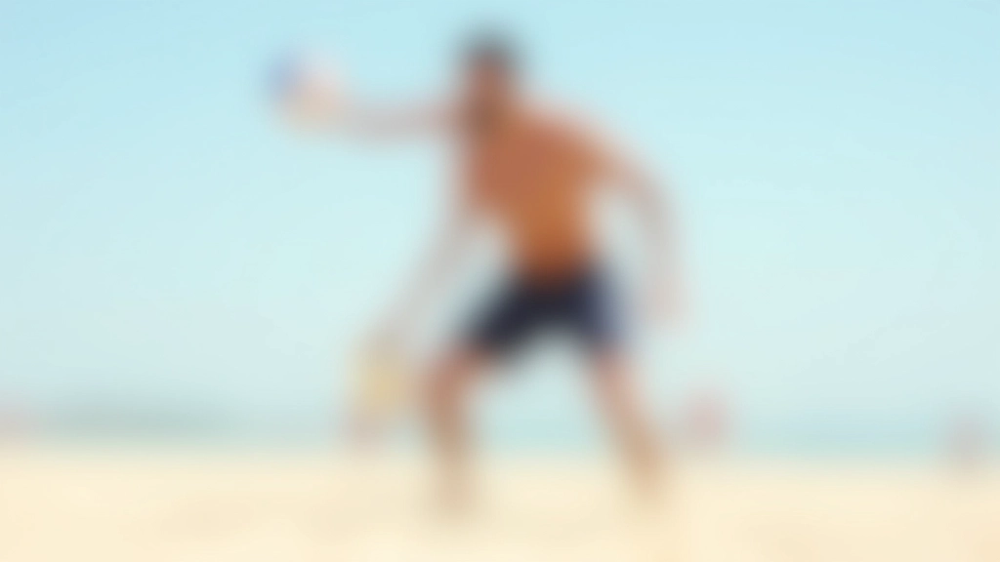
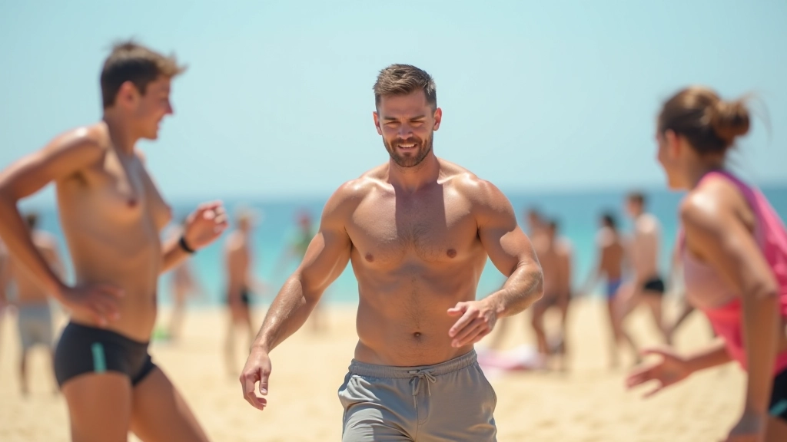
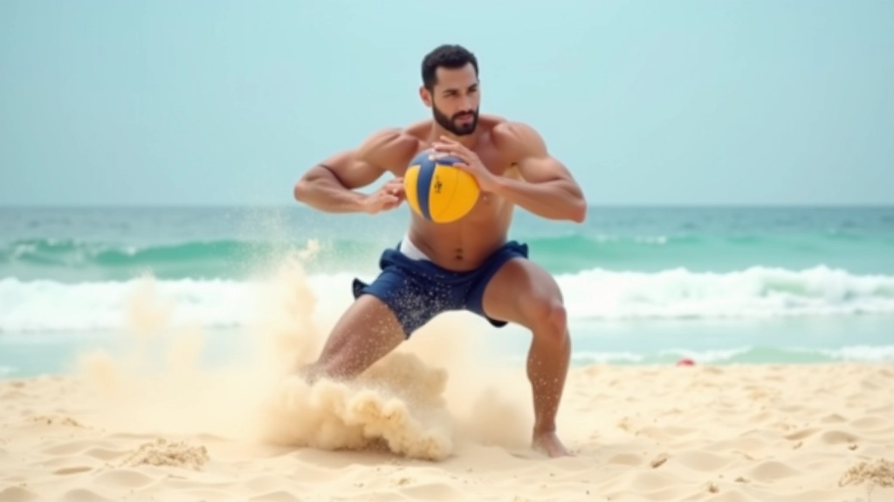

تمارين الحركة الجانبية السريعة
تطوير سرعة الحركة الجانبية على الرمل هو أساس كل لاعب كرة طائرة شاطئية ناجح. في هذا الدليل، نشارك التمارين الفعّالة التي تبني القوة والتوازن والرشاقة.


الكاتب
فريق رمال الشاطئ التحريري
فريق المحتوى والمراجعة التحريري
كتبه فريق رمال الشاطئ التحريري، متخصصون في توفير إرشادات عملية وموثوقة لتمارين حركة الرمل في الكرة الطائرة الشاطئية.
لماذا الحركة الجانبية السريعة مهمة؟
الحركة الجانبية ليست مجرد تمرين عادي. إنها أساس الدفاع القوي والهجوم المتوازن في الكرة الطائرة الشاطئية. عندما تتحرك بسرعة من جانب إلى آخر، فأنت تغطي مساحة أكبر من الملعب، وتستجيب بشكل أفضل للكرات السريعة، وتحافظ على توازنك على الرمل المتحرك.
معظم لاعبي الكرة الطائرة الشاطئية يركزون على الحركات الأمامية والخلفية فقط. لكن الحقيقة أن اللعبة الحديثة تتطلب حركة جانبية ديناميكية. سواء كنت تدافع عن الشبكة أو تتحرك للهجوم، فإن السرعة الجانبية تحدد الفرق بين لاعب متوسط ولاعب احترافي.
النقطة الأساسية: الحركة الجانبية السريعة على الرمل تتطلب ثلاثة عناصر: القوة في الساقين، والتوازن الثابت، والتنسيق بين الجزء العلوي والسفلي من الجسم.

التقنيات الأساسية للحركة الجانبية
الحركة الجانبية الصحيحة تبدأ من القدمين وليس من الجزء العلوي من الجسم. أولاً، قف في موقف استعداد قوي — قدماك بعرض أكتافك، ركبتاك مثنية قليلاً، وزنك موزع بالتساوي. ثم انقل وزنك نحو الاتجاه الذي تريد الحركة فيه.
الخطوة الأولى حاسمة. تحرك بخطوة جانبية سريعة — لا تتقاطع قدماك. كلما تحركت أسرع، كلما تمكنت من الوصول إلى الكرة في الوقت المناسب. حافظ على انخفاض مركز الثقل، وابق على كرات قدميك (أصابع القدم) طوال الحركة. هذا يعطيك المرونة والسرعة على الرمل.
خطوات الحركة الجانبية السريعة:
- موقف الاستعداد الأساسي (قدماك بعرض أكتافك)
- نقل الوزن باتجاه الحركة المطلوبة
- خطوة جانبية سريعة دون تقاطع الأقدام
- الحفاظ على التوازن والمرونة
- إعادة توازن سريعة للخطوة التالية
تمارين عملية للحركة الجانبية
هذه التمارين مصممة لبناء القوة والسرعة والتحكم. مارس كل تمرين لمدة 3-4 أسابيع قبل الانتقال إلى المستوى التالي.
التمرين الأول: الحركة الجانبية البطيئة
ابدأ بحركة جانبية بطيئة وتحكم كامل. قف في موقف استعداد وتحرك جانباً لمسافة 5 أمتار بخطوات منضبطة. لا تركض — التركيز على الشكل الصحيح أهم من السرعة. كرر هذا 10 مرات في كل اتجاه.
التمرين الثاني: الحركة المتسارعة
ابدأ ببطء ثم زد السرعة تدريجياً. تحرك جانباً لمسافة 10 أمتار، ابدأ بخطوات هادئة ثم اسرع. هذا يعلم جسدك كيفية التحول من السرعة المنخفضة إلى العالية دون فقدان التوازن.
التمرين الثالث: التغيير السريع للاتجاه
تحرك جانباً لمدة 3 ثوان بسرعة عالية، ثم توقف فوراً وغير الاتجاه. هذا يبني القوة الانفجارية والتحكم. كرر 8-10 مرات مع فترات راحة 30 ثانية بين كل مجموعة.


خطط التطور المرحلية
لا تتوقع النتائج فوراً. تطوير الحركة الجانبية السريعة يأخذ وقتاً وصبراً. ركز على الشكل الصحيح قبل السرعة. معظم اللاعبين الجدد يحاولون الركض بسرعة دون إتقان الأساسيات، وهذا يؤدي إلى إصابات.
الأسابيع 1-2: بناء الأساس
ركز على الشكل الصحيح. مارس الحركة البطيئة والمنضبطة. لا تقلق بشأن السرعة بعد.
الأسابيع 3-4: بناء القوة
أضف حركات أسرع. ابدأ بالحركات المتسارعة والتغييرات البسيطة للاتجاه.
الأسابيع 5-6: الديناميكية والتحكم
ادمج التمارين مع الكرات. تحرك بسرعة عالية وحاول ضرب الكرة بشكل صحيح.
نصائح مهمة للنجاح
ابدأ بقدميك
الحركة تبدأ من الأرض. تأكد من أن قدماك قوية ومتوازنة قبل محاولة الحركة السريعة. قدم ضعيفة = حركة ضعيفة.
قوة الساقين مهمة
مارس تمارين القوة بانتظام. القرفصاء، الاندفاع الجانبي، وتمارين الرمل تبني العضلات اللازمة.
احم نفسك من الإصابات
الإحماء قبل التمرين ضروري. مد العضلات بعد الانتهاء. لا تتجاهل الألم — خذ وقت راحة عند الحاجة.
التركيز على التكرار
التكرار يبني الذاكرة العضلية. كلما كررت الحركة، أصبحت أسهل وأسرع بشكل طبيعي.
التدريب مع الآخرين
التدريب مع فريق يجعل التمارين أكثر متعة وفعالية. يمكنك أيضاً تصحيح بعضكم البعض.
الصبر والاستمرارية
النتائج لا تأتي بين ليلة وضحاها. تدرب بانتظام وستلاحظ التحسن في غضون أسابيع قليلة.
الخلاصة
تطوير الحركة الجانبية السريعة ليس سراً معقداً. إنه يتطلب الممارسة المنتظمة، الشكل الصحيح، والصبر. ابدأ بالتمارين الأساسية، وركز على التقنية قبل السرعة، وتدرج تدريجياً. خلال بضعة أسابيع ستلاحظ فرقاً واضحاً في حركتك على الرمل.
تذكر: كل لاعب بدأ من الصفر. ما يميز اللاعبين الجيدين هو التزامهم بالتحسن المستمر. استمتع بعملية التدريب، كن صبوراً مع نفسك، وستصل إلى النتائج التي تريدها.
إخلاء المسؤولية
المعلومات الواردة في هذا الدليل مخصصة للأغراض التعليمية والمعلوماتية فقط. هذا ليس استبدالاً لتوجيهات مدرب معتمد أو أخصائي. قبل البدء في أي برنامج تدريب جديد، استشر مدربك أو طبيبك، خاصة إذا كان لديك أي حالات صحية موجودة مسبقاً. كل شخص مختلف، والظروف الفردية تختلف. الممارسة الآمنة والصحيحة هي مسؤوليتك الشخصية.
مقالات ذات صلة
اكتشف المزيد من التمارين والتقنيات لتحسين لعبتك

خطوات الحركة الأساسية للمبتدئين
تعرف على الطريقة الصحيحة للخطوة الأولى والحركات البطيئة التي تبني أساساً قوياً قبل الانتقال للتمارين المتقدمة.

إتقان وضعية الاستعداد والتوازن
تعلم كيفية الوقوف بشكل صحيح والحفاظ على التوازن على الرمل، وهو الأساس لكل حركة فعالة.

تطوير الحركات المتقدمة والقفزات
بعد إتقان الأساسيات، انتقل إلى الحركات المتقدمة والقفزات التي تميز اللاعبين المحترفين.